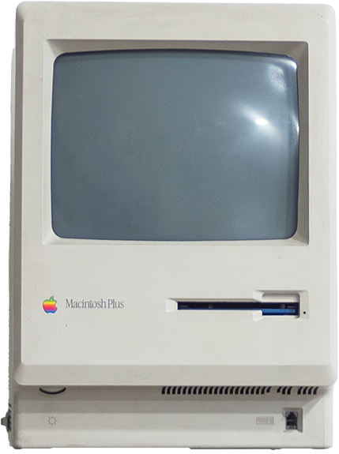

THE FIRST MICRO COMPUTER
The first computers made were big. Room size big. They were also very expensive and
pretty slow and
you had to be a specialist to program them.
So the president of IBM, Thomas Watson, can
be forgiven
for his infamous quote from 1943: I think there is a world market for maybe five computers.
